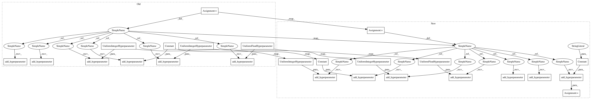

53da02f8d5923d32f3c11a28b0e11f64d905399d,ParamSklearn/components/classification/gradient_boosting.py,GradientBoostingClassifier,get_hyperparameter_search_space,#Any#,139
Before Change
def get_hyperparameter_search_space(dataset_properties=None):
learning_rate = UniformFloatHyperparameter(
name="learning_rate", lower=0.0001, upper=1, default=0.1, log=True)
subsample = UniformFloatHyperparameter(
name="subsample", lower=0.01, upper=1.0, default=1.0, log=False)
// Unparametrized
//max_leaf_nodes_or_max_depth = UnParametrizedHyperparameter(
// name="max_leaf_nodes_or_max_depth", value="max_depth")
// CategoricalHyperparameter("max_leaf_nodes_or_max_depth",
// choices=["max_leaf_nodes", "max_depth"], default="max_depth")
max_leaf_nodes = UnParametrizedHyperparameter(name="max_leaf_nodes",
value="None")
// Copied from random_forest.py
//n_estimators = UniformIntegerHyperparameter(
// name="n_estimators", lower=10, upper=100, default=10, log=False)
n_estimators = Constant("n_estimators", 100)
//max_features = UniformFloatHyperparameter(
// name="max_features", lower=0.01, upper=0.5, default=0.1)
max_features = UniformFloatHyperparameter(
"max_features", 0.5, 5, default=1)
max_depth = UniformIntegerHyperparameter(
name="max_depth", lower=1, upper=10, default=3)
min_samples_split = UniformIntegerHyperparameter(
name="min_samples_split", lower=2, upper=20, default=2, log=False)
min_samples_leaf = UniformIntegerHyperparameter(
name="min_samples_leaf", lower=1, upper=20, default=1, log=False)
cs = ConfigurationSpace()
cs.add_hyperparameter(n_estimators)
cs.add_hyperparameter(learning_rate)
cs.add_hyperparameter(max_features)
//cs.add_hyperparameter(max_leaf_nodes_or_max_depth)
//cs.add_hyperparameter(max_leaf_nodes)
cs.add_hyperparameter(max_depth)
cs.add_hyperparameter(min_samples_split)
cs.add_hyperparameter(min_samples_leaf)
cs.add_hyperparameter(subsample)
// Conditions
//cond_max_leaf_nodes_or_max_depth = \
// EqualsCondition(child=max_leaf_nodes,
After Change
@staticmethod
def get_hyperparameter_search_space(dataset_properties=None):
cs = ConfigurationSpace()
loss = cs.add_hyperparameter(Constant("loss", "deviance"))
learning_rate = cs.add_hyperparameter(UniformFloatHyperparameter(
name="learning_rate", lower=0.0001, upper=1, default=0.1, log=True))
n_estimators = cs.add_hyperparameter(Constant("n_estimators", 100))
max_depth = cs.add_hyperparameter(UniformIntegerHyperparameter(
name="max_depth", lower=1, upper=10, default=3))
min_samples_split = cs.add_hyperparameter(UniformIntegerHyperparameter(
name="min_samples_split", lower=2, upper=20, default=2, log=False))
min_samples_leaf = cs.add_hyperparameter(UniformIntegerHyperparameter(
name="min_samples_leaf", lower=1, upper=20, default=1, log=False))
min_weight_fraction_leaf = cs.add_hyperparameter(
UnParametrizedHyperparameter("min_weight_fraction_leaf", 0.))
subsample = cs.add_hyperparameter(UniformFloatHyperparameter(
name="subsample", lower=0.01, upper=1.0, default=1.0, log=False))
max_features = cs.add_hyperparameter(UniformFloatHyperparameter(
"max_features", 0.5, 5, default=1))
max_leaf_nodes = cs.add_hyperparameter(UnParametrizedHyperparameter(
name="max_leaf_nodes", value="None"))
return cs
In pattern: SUPERPATTERN
Frequency: 3
Non-data size: 25
Instances
Project Name: automl/auto-sklearn
Commit Name: 53da02f8d5923d32f3c11a28b0e11f64d905399d
Time: 2015-10-01
Author: feurerm@informatik.uni-freiburg.de
File Name: ParamSklearn/components/classification/gradient_boosting.py
Class Name: GradientBoostingClassifier
Method Name: get_hyperparameter_search_space
Project Name: automl/auto-sklearn
Commit Name: 53da02f8d5923d32f3c11a28b0e11f64d905399d
Time: 2015-10-01
Author: feurerm@informatik.uni-freiburg.de
File Name: ParamSklearn/components/classification/gradient_boosting.py
Class Name: GradientBoostingClassifier
Method Name: get_hyperparameter_search_space
Project Name: automl/auto-sklearn
Commit Name: 0ce482d4100099609e00db77a2526e31b10fdf0d
Time: 2015-10-01
Author: feurerm@informatik.uni-freiburg.de
File Name: ParamSklearn/components/classification/decision_tree.py
Class Name: DecisionTree
Method Name: get_hyperparameter_search_space
Project Name: automl/auto-sklearn
Commit Name: 8fd35f58ddb570ce1cf628a48358e4239836cf97
Time: 2015-10-01
Author: feurerm@informatik.uni-freiburg.de
File Name: ParamSklearn/components/preprocessing/extra_trees_preproc_for_classification.py
Class Name: ExtraTreesPreprocessor
Method Name: get_hyperparameter_search_space